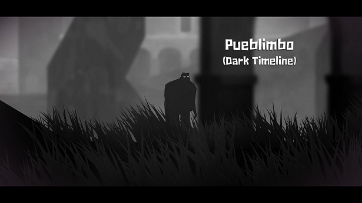

| Ótima mistura de exploração, combates e quebra-cabeças. | O game perde o rítmo em alguns momentos. |
| Ambientes interessantes e repletos de tiradas bem-humoradas. | Alguns pontos da história não chegam a ser concluídos. |
| Uma boa dose de desafios, especialmente nos momentos de plataforma. | Antagonistas menos marcantes e desenvolvidos do que no game original. |
Sete anos após os eventos de Guacamelee!, Juan é um homem feliz e que se preocupa mais com sua família do que com as aventuras do passado.
No entanto, enquanto tudo anda tranquilo para o herói, o mesmo não acontece nas demais linhas do tempo. Acontece que Guacamelee! não tem somente uma dimensão: em todos os outros espaços do Mexiverse, Juan falhou de maneiras diferentes em sua missão de parar Carlos Calaca.
Na mais sombria das linhas do tempo, quem cumpriu essa missão foi Salvador, um luchador corrompido por sua máscara e que busca a passagem para o reino dos deuses. Somente lá ele vai encontrar a Guacamole sagrada, que vai lhe conceder os poderes de que ele precisa para reinar supremo em todas as dimensões — algo que pode resultar no fim do Mexiverse.
Nesse contexto, os diversos sábios Uay Chivo convocam o único Juan que restou para ele salvar o Mexiverse e parar os planos do vilão. Isso se traduz em uma nova aventura repleta de ação, momentos de plataforma desafiantes (alguns deles em nível que chega a ser irritantes), elementos da cultura mexicana e um humor ainda mais afiado — e que, embora diminua a quantidade de memes do antecessor, ainda os mantêm.
Guacamelee! 2 é uma sequência no sentido mais clássico da palavra: mantendo os elementos que consagraram o jogo original, ele expande seu universo para trazer uma história ainda mais surreal e cenários expandidos.
O game oferece uma experiência bastante linear: para parar Salvador, você tem que impedi-lo de adquirir três artefatos mágicospara impedi-lo de concretizar seus planos. Conforme o jogador avança, ele encontra novas habilidades que melhoram suas capacidades de ataque ao mesmo tempo em que abrem mais formas de exploração.
| Grande quantidade de veículos para o jogador. | Sem lobbies PVP no lançamento. |
| Cenários "cross-country" variados e ricos em detalhes. | Não apresenta a experiência de simulador: O jogador deve procurar outro jogo dedicado para tal. |
| História melhorada em relação ao primeiro jogo. |
The Crew 2 é o novo game da franquia de corridas da Ubisoft para Xbox One, PC e PS4. O jogo traz uma proposta ousada de apresentar diversas categorias misturadas, onde é preciso se especializar não apenas em correr com carros e motos, mas também pilotar aviões, lanchas e os mais loucos veículos. Confira o nosso review completo:
Desde quando foi anunciado, The Crew 2 chama atenção por apresentar uma proposta diferente dos games de corrida convencionais: diversos tipos de veículos à disposição do jogador.
Isso é inserido na história de uma forma bem convincente. Você é um corredor que busca se promover na internet. Para isso, será preciso se associar a eventos de transmissões em busca de novos seguidores, que por sua vez trarão mais dinheiro para seu caixa. Isso faz com que você prove o seu potencial, mandando bem em centenas de provas com os mais variados veículos.
Muitos foram os jogos que apostaram na premissa de variação de veículos para impulsionar suas vendas. Entretanto, poucos conseguiram executar tão bem como The Crew 2. O game conta com uma jogabilidade que muito bem diferenciada de acordo com a máquina utilizada pelo jogador.
E ela não fica limitada apenas ao tipo de "terreno" por onde a prova será disputada. Em outras palavras, os carros variam de acordo com o tipo de competição. Dessa forma, veículos de corridas convencionais possuem uma forma de pilotar, que já muda quando as provas de rally são disputadas em meio a desertos e montanhas, e que se tornam ainda mais complexas no controle dos Monster Trucks.
No controle, das aeronaves é preciso decorar bem o leque variado de manobras, já que todas as provas consistem em realizar uma série de tarefas e acumular pontos. E por fim, com as lanchas, é preciso saber lidar com a sensibilidade de guia-las, principalmente em curvas e no controle pós-quedas.
The Crew 2 é um game que diverte por contar com elementos bem diversificados, mas que deixa a desejar em aspectos técnicos. Por mais que seja agradável pilotar um leque tão extenso de carros, lanchas e aviões, decepciona bastante a ambientação simples do jogo e os diversos bugs ao longo de sua jornada.
| Belíssimos gráficos e arte dos cenários. | O MENINO pode atrapalhar em alguns casos. |
| História rica que conta com bom detalhamento de acontecimentos da mitologia nórdica. | |
| Jogabilidade nova para a série, com fatores e sistemas de RPG bem implementados. |
God of War marca o retorno de uma das franquias mais famosas do mundo dos jogos. Exclusivo para PS4, o título traz de volta Kratos que, agora em uma versão mais velha, precisa lidar com a paternidade e antigos problemas que ressurgem do passado. Confira o review completo:
Desde que foi anunciado, o novo God of War chama atenção por mostrar um lado mais humano de Kratos. Além da aparência mais velha, a presença de Atreus, seu filho, causou um enorme impacto, uma vez que o protagonista sempre carregou a fama de cruel e insensível nos outros títulos da saga.
Durante toda a (longa) jornada, o Deus da Guerra mostra, por muitas vezes, um lado paternal que entra em confronto com seu ego brutamontes - o que acaba ajudando na formação do "caráter de guerreiro" de seu filho. O seu jeito rude e impaciente é fundamental para que Atreus aflore seus instintos de sobrevivência e, ao mesmo tempo, descubra suas habilidades hereditárias.
Ao contrário do pai, Atreus mostra que a bondade é algo presente em seu sangue. A generosidade do garoto está presente desde a forma como ele lida com questionamentos até o jeito que trata outros personagens. A característica do filho acaba servindo de espelho para Kratos enfrentar situações de maneiras diferentes - se sozinho, o Deus da Guerra não agiria da mesma forma.
Isso é apenas o pano de fundo de uma trama que, embora demore muito para começar a se desenrolar, deixa os jogadores apreensivos a todo momento. É impossível não criar e recriar teorias, principalmente para aqueles que jogaram todos os títulos da franquia.
Já nas primeiras notícias sobre o seu lançamento, era possível ver que a relação de pai e filho não ficava apenas na história. O game traz um inédito sistema de cooperação nunca antes visto na saga, fazendo com que a participação do pequeno guerreiro seja fundamental em praticamente todos os momentos.
No sistema de combate, do qual falaremos mais adiante, Atreus age como seu braço direito. Graças a uma dificuldade um pouco mais elevada que os títulos anteriores (como God of War 3 e God of War: Ascension), a todo momento será preciso utilizar o garoto para distrair e atordoar inimigos, ou contar com ele para curar e até ressuscitar Kratos.
Umas das grandes novidades do novo God of War é o seu sistema de evolução. O game traz alguns elementos similares a um RPG convencional, mas que não fazem com que ele perca suas origens. Em outras palavras, há um interessante sistema de troca de pontos de experiências por habilidades. Entretanto, eles são recebidos de uma forma limitada, não permitindo, por exemplo, que Kratos procure inimigos pelo cenário apenas para acumular pontos e adquirir movimentos.
O leque de ataques é extenso e variado para cada tipo de arma. Se nos outros títulos o progresso natural fazia com que Kratos adquirisse todas as habilidades disponíveis no jogo, no novo God of War é preciso escolher, pois dificilmente você conseguirá ter todos movimentos.
O visual de God of War é de longe um dos mais belos da atual geração. Em nossos testes, o jogo rodou em um PS4 Pro junto a uma TV 4K com suporte à tecnologia HDR. Dessa forma, pudemos conferir todo o potencial gráfico que o game tem a oferecer.
Ele não decepcionou - pelo contrário. Mesmo acostumados a um nível gráfico avançado de títulos recentes no mundo dos games, God of War pode ser considerado como o melhor exclusivo do PS4 no quesito visual, superando jogos consagrados nesse quesito, como Uncharted: The Lost Legacy e Horizon Zero Dawn.
A começar pelos cenários, é incrível o nível de detalhamento do ambiente. Desde rochas cobertas com uma grande camada de neve, até uma vegetação rica e variada. Os efeitos de sombra e luz também impressionam, criando uma imersão nunca antes vista.
God of War, o jogo mais aguardado de 2018, chega de forma triunfal e coloca novamente a franquia no topo das atenções. Os receios em relação às mudanças se extinguem nas primeiras horas, mostrando como se mescla elementos que consagraram a franquia com inovações que caíram como uma luva. O jogo encanta tanto pela mecânica lendária, como pelos gráficos extraordinários. Kratos retorna ao trono com um título obrigatório para seus fãs.